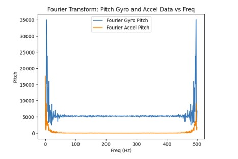

Becky Lee (bl478)
My name is Becky Lee and I am an ECE M.Eng student. I'm excited for this semester and exploring more about robotics. In my free time, I like to learn new cultures and languages.

My name is Becky Lee and I am an ECE M.Eng student. I'm excited for this semester and exploring more about robotics. In my free time, I like to learn new cultures and languages.

For part 1A of the lab, I installed the Arduino IDE and the associated libraries needed for the Sparkfun RedBoard Artemis Nano. I also had to update the CH340 driver in order for my laptop to recognize the board.
I ran the blink example code by going to Examples > 01.Basics > Blink which blinks the onboard LED on and off.
I ran the serial example code by going to Examples > Apollo3 > Example04_Serial which echos back any message sent to the serial monitor.
I measured the temperature using the analog read example by going to Examples > Apollo3 > Example2_analogRead. As I blew on it, the temperature went up slightly.
I tested the microphone on the board by running the following example code Example > PDM > Example1_MicrophoneOutput. As I whistled, the frequency increased from around 600 to over 1000.
For the final task, I modified the blink demo code so that when the microphone detected a C note, then the LED would blink. Because of the app that I was using to generate the C note, the frequency for the C note was registering between 1310 and 1320.
I needed to set up a virtual environment in Python.

I also installed the ArduinoBLE library in the Arduino IDE. Then, I got the MAC address of the Artemis board by running the ble_arduino code.

Then, the MAC address and UUID was changed in the connections.yaml file so that I could connect the Artemis to my computer.


On the Arduino side, the ble_arduino.ino file provides the MAC address for the Artemis board and advertises that this device is available to be connected. We then generate a specific uuid on the python side in order to create a unique identifier for our specific Artemis board. Using python, the computer will scan for available devices and search for my Artemis board that has a unqiue MAC address and UUID pair. Once connected, the Artemis and computer can exchange messages back and forth using Bluetooth.
(1) I edited the ECHO command on the Arduino side so when it receives a string from the computer, it can send back “Robot says ->” along with the original string.

(2) I created a new command called SEND_THREE_FLOATS on the Arduino side which parses the three floats sent by the computer. Then, it prints out the three floats in the serial monitor.
(3) On the Arduino side, for GET_TIME_MILLIS, I used the currentMillis variable to get the current time in milliseconds by calling the millis() function. Then on the python side, the current time was sent back to the computer.

(4) I created a notification handler that takes the response string from the Artemis and parses the message, so it retrieves just the time.

(5) I created a command called GET_DATA which collects and sends data for 10 seconds. The notification handler is used to extract the time from the message. The effective data transfer rate is 242 messages/10 secs = 24.2 messages/sec.

(6) For SEND_TIME_DATA, I first collected the data for 10 seconds into an array of length 700. Once either the time reached 10 seconds or the array was filled, then we would send each data in the array to the computer.

(7) For GET_TEMP_READINGS, I used the same structure of collecting the time and temperature for 10 seconds into arrays of length 700. Then, I would send out the data once the arrays had been filled or we reached 10 seconds. I also created a notification handler on the python side which would separate the time and temperature and put it into time and temp arrays respectively.


(8) The first method where you send live data allows you to get the data almost instantaneously since you send the data right after you have received the measurement. This method can be useful when you want to make quick decisions based on real time data. The second method where you send data after it has been collected in an array allows you to record the data at a much faster rate since there are no interrupts from the computer or the BLE service. The second method is useful when you want to send data after you have completed a trial or a test. I am sending floats to represent the time and the temperature. Each float is 4 bytes. In turn, if we have 384kB of RAM, we can store 384kB/8 bytes which is 48,000 data points.
I tested the data rate by first sending a string called “Hello”. Then, I created a function similar to ECHO called ECHO_BYTES_BACK. Then I created a loop that increments the message being sent by 5 bytes each time. I would calculate the difference between when the message was sent and when the response message was received. In a separate loop, I calculated the byte length and data rate and then generated a graph shown below.

The data rate for 5-byte replies is around 20 bytes/second while 120-byte replies is about 500 bytes/second. Short replies introduce a lot of overhead because you need to send multiple packets to transmit a large amount of data. Each message contains a certain amount of overhead. As a result, since you need to send more packets, there will be a greater total amount of overhead as compared to larger packets. Larger replies help to reduce overhead because you can use fewer packets to send over a large amount of data. Because each message contains a large amount of data, the overhead is small as compared to the size of the actual data you want to send.
When you send data at a higher rate from the robot to the computer, the computer is able to read all of the data published. I tested this by sending over an array that had 1000 entries containing the time in milliseconds from the Artemis to the computer and the computer was able to receive all 1000 entries. The caveat is that since the data points were floats, there may have been a smaller overhead resulting in less data being transmitted overall.
I learned about the onboard Artemis board sensors and how Bluetooth can be used to transmit data between Artemis and the computer. It was also interesting to see how the data rate could increase or decrease depending on whether there were print statements in both the Arduino and Python code.

In this lab, the objective was to become familiar with the accelerometer and gyroscope on the IMU.
For this part of the lab, I had to install the Sparkfun 9DOF IMU Breakout ICM 20948 Arduino Library. To connect the IMU to the Artemis board, I used QWICC connectors.

For this part of the lab, I had to install the Sparkfun 9DOF IMU Breakout ICM 20948 Arduino Library. To connect the IMU to the Artemis board, I used QWICC connectors.
The AD0_VAL corresponds to the value of the last bit of the I2C address which can be changed depending on the I2C address configuration of the board. In my case, it is 1.
As I flip the board, the z value on the acceleration and gyroscope data become negative. As I rotate the board (ie on the y axis), then the x and y values change to be either positive or negative. When I accelerate the board, the x, y, and z values increase.
I also made the LED blink 3 to 4 times to indicate that the IMU was being set up properly.
I used the following equations from class to compute pitch and roll.
Here is the data for the accelerometer at 0 degrees for both pitch and roll.
Here is the data for the accelerometer at -90 and 90 degrees respectively for roll.

Here is the data for the accelerometer at -90 and 90 degrees respectively for pitch.


My accelerometer is quite close to the actual value of -90 and 90 degrees for both pitch and roll. It is only off by about 1-2 degrees. Therefore, I did not do a 2 point calibration.
Based on the graphs shown below for pitch and roll, I determined the cutoff frquency to be about 5 Hz since that was where the noise started to decrease significantly.


I used the following equation from class to compute the low pass filter for the pitch and roll of the accelerometer.

Since the sampling rate was 398.72 for pitch, the alpha value was determined to be 0.0451 For the roll, the sampling rate was 362.58. Therefore, the alpha value was 0.0797. As can be seen from the graphs shown below, the low pass filter eliminates most of the noise (even during vibrations) in the accelerometer measurements for pitch and roll when using the alpha values mentioned above.


These are the equations that I used to compute the pitch, roll, and yaw for the gyroscope.

Below are the pitch, roll, and yaw data from the gyroscope.


Compared to the accelerometer, the gyroscope is more susceptiple to noise and small vibrations. It is due to the gyroscope taking the result of the previous measurements and adding it to the current measurement in order to get the estimated angle for pitch, roll, and yaw. Therefore, small errors in the predicted angle can accumulate.



As the sampling frequency increase, the estimated angles from the gyroscope becomes more accurate since there are more data points which decreases the error.
This is the sampling frequency when it is set at 10 Hz:


This is the sampling frequency when it is set at 10 kHz:


This is the equation from class that I used for the complementary filter.

I used an alpha value of 0.85 for the complementary filter meaning that most of the weight used to calculate the angle for pitch/roll is on the accelerometer data. I chose to use the accelerometer data more because it does not flucuate as much with noise. The complementary filter works best between the -90 and 90 degree range.